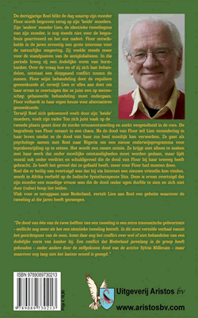

Bittere maretak

De dertigjarige Roel blikt op de dag waarop zijn moeder Floor wordt begraven terug op zijn 'beide' moeders. Zijn 'andere' moeder Lien, de identieke tweelingzus van zijn moeder, is nog steeds niet voor de begrafenis gearriveerd. Floor ontwikkelt in de jaren zeventig een grote interesse voor de natuurlijke omgeving. Zij voelt steeds meer voor het standpunt van de antiglobalisten die hun woede tonen over een wereld waarin de economie steeds maar voorrang krijgt.
In die periode krijgt zij een dodelijke vorm van borstkanker. Over de vraag hoe en of zij zich laat behandelen, ontstaat een diepgaand conflict tussen de zussen. Floor wijst de behandeling door de reguliere geneeskunde af, terwijl Lien er alles aan doet om haar te overtuigen dat ze juist een op wetenschap gebaseerde behandeling moet ondergaan.
Floor volhardt in haar eigen keuze voor alternatieve geneeskunde. Terwijl Roel zich gekoesterd voelt door zijn 'beide' moeders, voelt zijn vader Ton zich juist vaak op de tweede plaats gezet door de sterke vrouwentweeling en zoekt vergetelheid in de roes. De begrafenis van Floor ontaart in een chaos.
Lien wil na de dood van Floor verandering in haar leven omdat ze de dood van haar zus heel moeilijk kan verwerken. Ze gaat als psychologe samen met Roel naar Nigeria om een nieuw onderwijsprogramma voor leprabestrijding op te zetten.

Het wordt een zware missie.
Ze krijgt niet alleen te maken met haar werk dat onder moeilijke omstandigheden moet worden gedaan, maar lijdt vooral ook onder verdriet en schuldgevoel die de dood van Floor bij haar teweeg heeft gebracht. Ze heeft het gevoel dat ze gefaald heeft, meer voor Floor had moeten doen.
Roel die er heilig van overtuigd was dat hij via Internet een nieuwe vriendin kon vinden, wordt in Afrika verliefd op de Indische fysiotherapeute Sita. Deze is ervan overtuigd dat zijn moeder een moedige vrouw was die de dood onder ogen durfde te zien en zich niet door (valse) hoop liet leiden. Vlak voor ze teruggaan naar Nederland, vertelt Lien aan Roel een geheim waarover de tweeling al die jaren heeft gezwegen.
August Agasi schreef na het lezen van Bittere Maretak en het sprookje Sjatodo het volgende gedicht.
SENILITAS NON VINCET
Leeft hij in het Limburgs land
diep heeft hij zijn hart verpand
aan de wondere wereld van het boek
naar het kind in hem is hij op zoek
weert hij zich in huis en hof
leeft hij met de seizoenen mee
toen de muze zijn blik trof
koos eenparig een tweeling zee
kan in nood een vriend hem storen
bedient hij naar behoren wijf en goed
zijn hem kleinkinderen geboren
vertellen zit hem in het bloed
met zijn Maretak trok hij diepe voren
een ware man, een fiere Watertoren